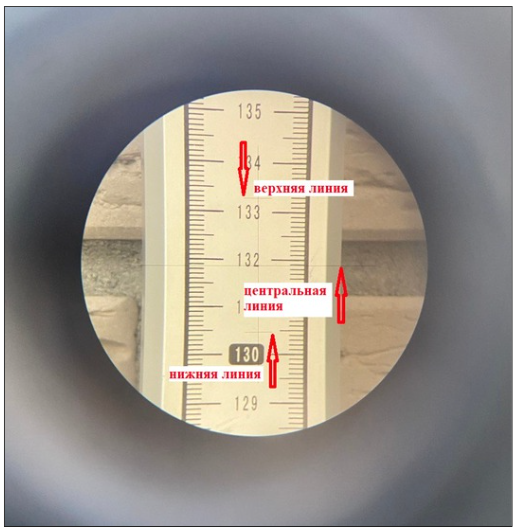
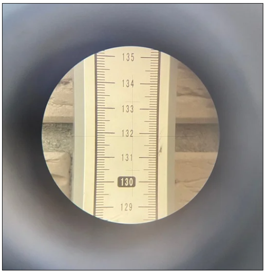
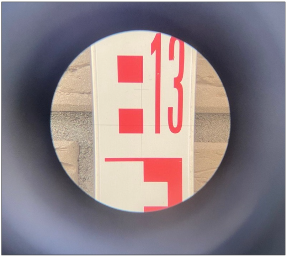

Учимся работать с нивелиром

Самый простой и полезный прибор в работе геодезиста – нивелир. Это прибор для определения разницы высот между двумя или более точками. Нивелир бывает:
- оптический,
- электронный,
- и лазерный.
Мы рассмотрим самый простой, но надежный вид нивелира – оптический. Когда вы поймете принцип его работы, освоить работу с другими видами нивелира для вас не составит труда.
Теперь давайте посмотрим видео, в котором я покажу, как правильно установить нивели на штатив.
Отлично! Мы установили нивелир на штатив. Но это еще не все. Теперь важно правильно зафиксировать его в рабочее положение. Более подробно смотрите в следующем видео.
Существует примерно четыре способа установки прибора на штатив. Они зависят от прибора, типа уровня (круглый или цилиндрический) и даже условий работы. Мы изучим самый простой способ установки.
Итак, нивелир установлен и зафиксирован. Для того чтобы приступить к началу работы, важно понимать, из каких деталей он состоит. Давайте посмотрим следующее видео.
Отлично! Вы уже разобрались с основными винтами и назначением нивелира. Теперь перейдем к самому главному.
Как брать отсчет по рейке
Давайте посмотрим в окуляр и настроим резкость боковым винтом. Перед нами будет следующее изображение:

В окуляре мы видим три линии: верхняя и нижняя – короткие, центральная – длинная. Для того чтобы узнать высоту, нам необходимо работать с центральной линией.
Рейка имеет две стороны: одна похожа на обычную линейку (или рулетку), а другая имеет графическое обозначение длины – нивелирную Е-шкалу. Она разделена на секторы, которые равны 10 см, каждое деление которого – 1 см.
Считаем отсчет по стороне, которая нам наиболее привычна.

Давайте посмотрим, на какое значение линейки попадает центральная линия в окуляре.
На фото мы видим, что центральная линия совпадает с отметкой – 1319 миллиметров, или 1,319 метра. Точность работ устанавливается до миллиметров.
В работе существует человеческий фактор – часто путают отметку из-за того, что отсчет берут по нижней или верхней линии. Поэтому когда смотрите в окуляр, обратите внимание на то, по какой линии берете отсчет.
Готовы потренироваться? Попробуйте самостоятельно определить отсчет по рейке.
Отсчет на этом фото равен 1313 мм. Почему?

Так как шкала разделена на дециметры, мы сначала обращаем внимание на цифру, которая находится ниже центральной линии и начинается от сплошной черты. Она будет основой нашего отсчета – цифра 13. Далее начинаем считать от цифры сколько целых делений, у нас всего одно целое деление – белое, поэтому следующая цифра нашего отсчета – 1, и теперь профессиональная «фишка» геодезиста – нужно зрительно разделить деление на 10 (т.к. оно деление равно 1 см или 10 мм), центральная ось находится на 3мм выше основания деления, поэтому последняя цифра нашего отсчета – 3. Соединяем все получившиеся значения 13-1-3, т.е. отчет по рейке равен 1313 мм, или 1,313 м.
Ничего сложного – дело привычки.
И еще одна полезная опция нивелира – это измерение расстояния. Для этого нам необходимо также снять отсчеты по рейке, но уже использовать верхнюю и нижнюю линию.
Верхний отсчет равен 1333, нижний отсчет – 1304,5.
Расчет расстояния осуществляется по формуле: L=(верхний отсчет – нижний отсчет)*100, где 100 – фиксированная величина (постоянный коэффициент дальномера.
L = (1333-1304,5)*100 = 2850 мм, или 2,85 м, то есть рейка находится от нивелира на расстоянии 2,85м.
Давайте больше практиковаться, чтобы вы довели снятие отсчетов до автоматизма.
Прекрасно! Переходите в следующий урок. В нем вы за несколько шагов научитесь переносить высотные отметки от репера.